Ortalide chacamel
Ortalis vetula
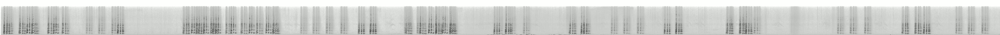

Colin à gorge noire
Colinus nigrogularis
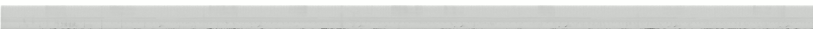

Pigeon à bec rouge
Patagioenas flavirostris
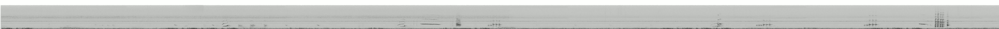
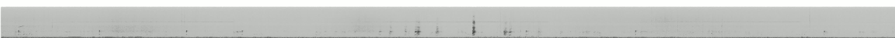
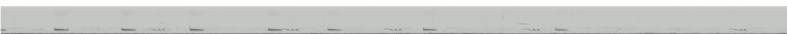
Colombe de Jamaïque
Leptotila jamaicensis
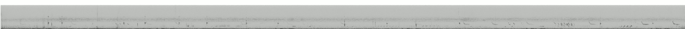
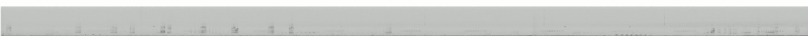
Géocoucou faisan
Dromococcyx phasianellus
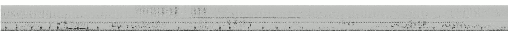
Coulicou manioc
Coccyzus minor

Martinet de Vaux
Chaetura vauxi
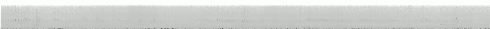
Râle d'eau
Rallus aquaticus
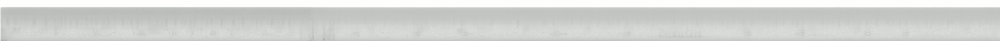

Échasse blanche
Himantopus himantopus
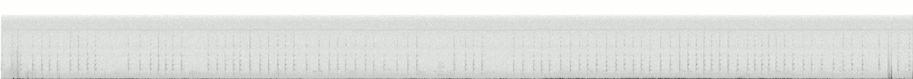

Jacana du Mexique
Jacana spinosa
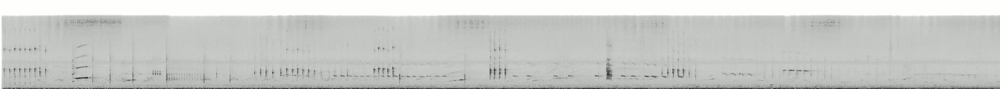

Mouette de Bonaparte
Chroicocephalus philadelphia
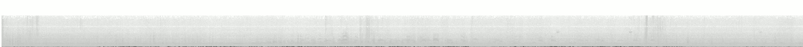
Petit Blongios
Botaurus exilis
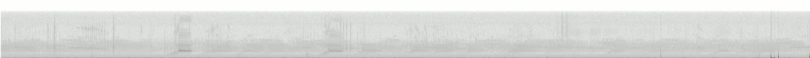
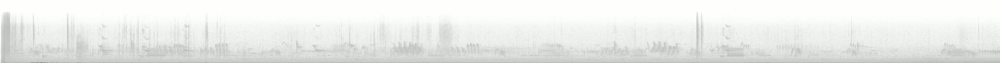


Épervier d'Europe
Accipiter nisus

Épervier de Cooper
Astur cooperii
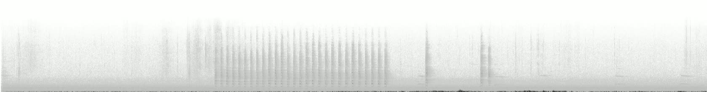

Chouette rayée
Strix varia
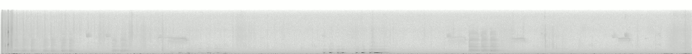

Trogon à tête noire
Trogon melanocephalus
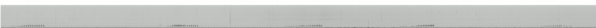
Motmot de Lesson
Momotus lessonii
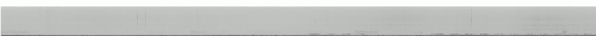

Pic maculé
Sphyrapicus varius
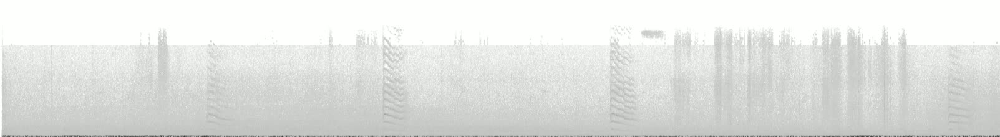

Pic chevelu
Leuconotopicus villosus
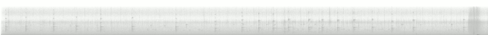
Pic vert
Picus viridis
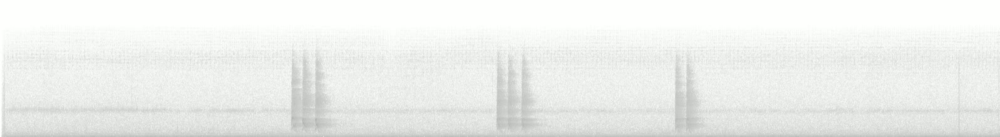

Grand Pic
Dryocopus pileatus
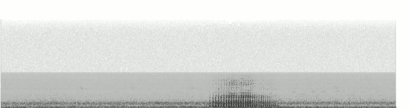

Faucon émerillon
Falco columbarius
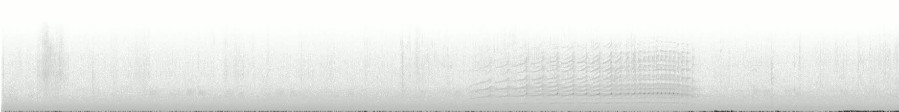
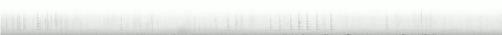

Faucon pèlerin
Falco peregrinus
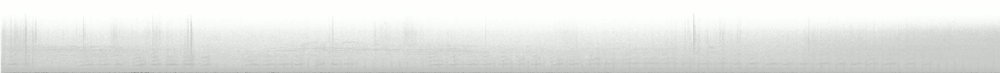
Calopsitte élégante
Nymphicus hollandicus
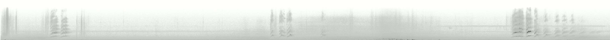

Conure veuve
Myiopsitta monachus
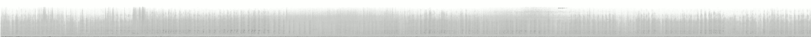

Conure de Patagonie
Cyanoliseus patagonus
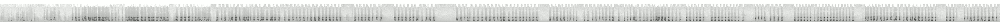

Conure naine
Eupsittula nana
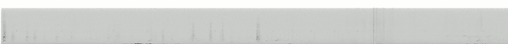

Conure à tête bleue
Thectocercus acuticaudatus
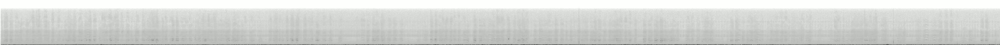

Géositte à ailes rousses
Geositta rufipennis
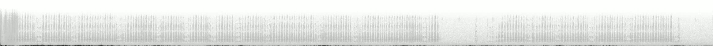
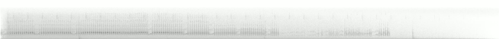

Tityre masqué
Tityra semifasciata
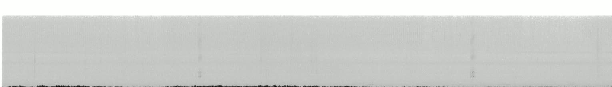

Bécarde à gorge rose
Pachyramphus aglaiae
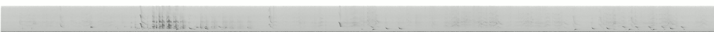

Pioui de l'Est
Contopus virens
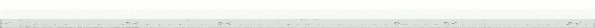

Moucherolle à ventre jaune
Empidonax flaviventris
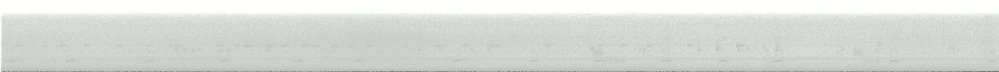

Moucherolle obscur
Empidonax difficilis
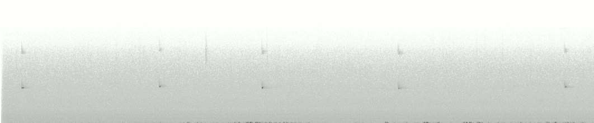
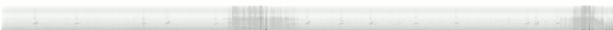

Gaucho à bec noir
Agriornis montanus
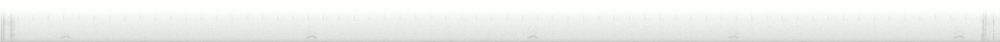
Attila à croupion jaune
Attila spadiceus
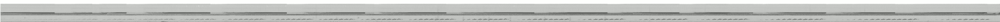
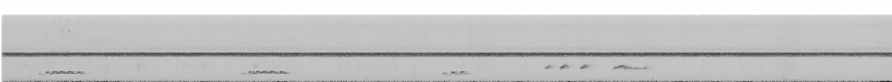
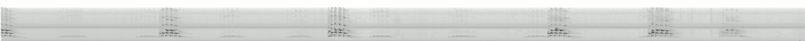

Tyran huppé
Myiarchus crinitus
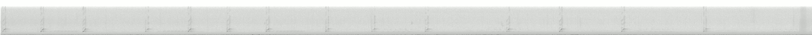

Tyran de Wied
Myiarchus tyrannulus
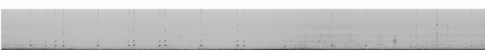

Tyran quiquivi
Pitangus sulphuratus
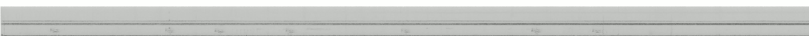

Tyran de Couch
Tyrannus couchii
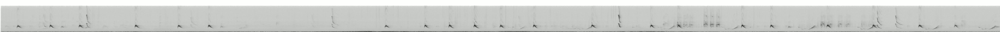
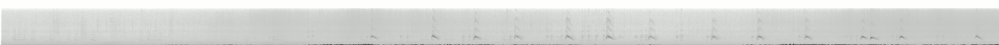
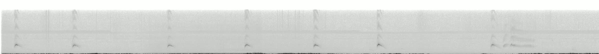

Viréo des mangroves
Vireo pallens
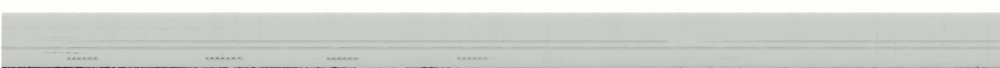

Viréo de Cassin
Vireo cassinii

Viréo à tête bleue
Vireo solitarius

Viréo aux yeux rouges
Vireo olivaceus
Viréo jaune-verdâtre
Vireo flavoviridis


Pie-grièche boréale
Lanius borealis

Mésangeai du Canada
Perisoreus canadensis

Geai enfumé
Cyanocorax morio

Geai bleu
Cyanocitta cristata

Geai de Woodhouse
Aphelocoma woodhouseii

Geai des chênes
Garrulus glandarius

Corneille d'Amérique
Corvus brachyrhynchos

Corneille de rivage
Corvus ossifragus

Corneille noire
Corvus corone

Grand Corbeau
Corvus corax
Mésange noire
Periparus ater
Mésange nonnette
Poecile palustris

Mésange arlequin
Baeolophus wollweberi

Auripare verdin
Auriparus flaviceps

Pouillot véloce
Phylloscopus collybita

Bouscarle de Cetti
Cettia cetti

Fauvette à tête noire
Sylvia atricapilla

Fauvette mélanocéphale
Curruca melanocephala

Cama brune
Chamaea fasciata

Roitelet à couronne dorée
Regulus satrapa

Sittelle à poitrine blanche
Sitta carolinensis

Grimpereau brun
Certhia americana

Grimpereau des jardins
Certhia brachydactyla

Gobemoucheron du Yucatan
Polioptila albiventris

Gobemoucheron à queue noire
Polioptila melanura

Gobemoucheron de Californie
Polioptila californica

Troglodyte familier
Troglodytes aedon

Troglodyte austral
Troglodytes musculus

Troglodyte mignon
Troglodytes troglodytes

Troglodyte des forêts
Troglodytes hiemalis

Troglodyte des marais
Cistothorus palustris

Troglodyte de Caroline
Thryothorus ludovicianus
Troglodyte à poitrine tachetée
Pheugopedius maculipectus

Étourneau sansonnet
Sturnus vulgaris

Moqueur des savanes
Mimus gilvus

Merlebleu de l'Est
Sialia sialis

Grive à joues grises
Catharus minimus

Grive de Bicknell
Catharus bicknelli

Grive solitaire
Catharus guttatus

Grive des bois
Hylocichla mustelina

Merle fauve
Turdus grayi

Gobemouche gris
Muscicapa striata

Rougequeue à front blanc
Phoenicurus phoenicurus

Pipit des arbres
Anthus trivialis

Pipit d'Amérique
Anthus rubescens

Gros-bec errant
Hesperiphona vespertina

Roselin familier
Haemorhous mexicanus

Chardonneret élégant
Carduelis carduelis

Serin cini
Serinus serinus

Tarin des pins
Spinus pinus

Plectrophane des neiges
Plectrophenax nivalis

Bruant zizi
Emberiza cirlus

Bruant à épaulettes
Peucaea carpalis
Tohi olive
Arremonops rufivirgatus

Bruant des champs
Spizella pusilla

Tohi de Californie
Melozone crissalis

Carouge à épaulettes
Agelaius phoeniceus

Quiscale chanteur
Dives dives

Carouge galonné
Agelasticus thilius

Paruline des ruisseaux
Parkesia noveboracensis

Paruline obscure
Leiothlypis peregrina

Paruline à joues grises
Leiothlypis ruficapilla

Paruline masquée
Geothlypis trichas

Paruline à capuchon
Setophaga citrina

Paruline flamboyante
Setophaga ruticilla
Paruline à gorge orangée
Setophaga fusca
Paruline des mangroves
Setophaga petechia

Paruline rayée
Setophaga striata

Paruline à gorge noire
Setophaga virens

Piranga écarlate
Piranga olivacea

Cardinal rouge
Cardinalis cardinalis

Passerin indigo
Passerina cyanea

Diuca gris
Diuca diuca

Sporophile de Morelet
Sporophila morelleti
Saltator du Mexique
Saltator grandis